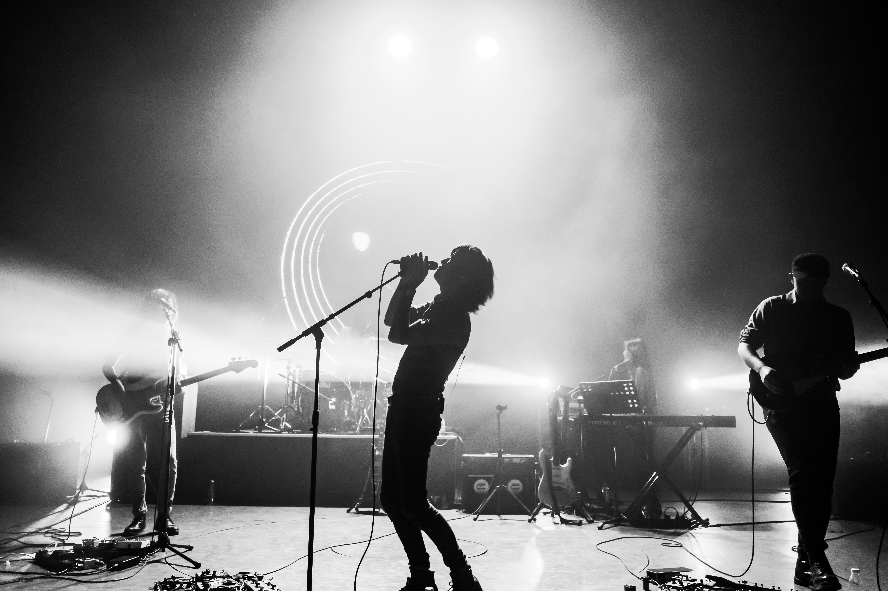

A concert is a live music performance in front of an audience.The performance may be by a single musician,
sometimes then called a recital, or by a musical ensemble, such as an orchestra, choir, or band. Concerts are
held
in a wide variety and size of settings, from private houses and small nightclubs, dedicated concert halls,
amphitheatres and parks, to large multipurpose buildings, such as arenas and stadiums. Indoor concerts held in
the
largest venues are sometimes called arena concerts or amphitheatre concerts. Informal names for a concert
include
show and gig.
Regardless of the venue, musicians usually perform on a stage (if not actual then an area of the floor designated as such). Concerts often require live event support with professional audio equipment. Before recorded music, concerts provided the main opportunity to hear musicians play. For large concerts or concert tours, the challenging logistics of arranging the musicians, venue, equipment and audience (ticket sales) are handled by professional tour promoters.
History
While the first concerts did not officially appear until the late 17th century, similar gatherings had been
around
throughout the 17th century at several European universities, such as Oxford and Cambridge. Officially, though,
the
first public concerts that required an admission were created by the English violinist, John Banister. Over the
next few centuries, concerts began to gain larger audiences, and classical symphonies were very popular.
Finally,
after World War 2, these events changed into the modern concerts that take place today. An example of an early,
post-WW2 concert is the Moondog Coronation Ball.
17th century
Concert, by Italian baroque artist Bernardo Strozzi (circa 1630/1631)
The first known occurrence of concerts where people are charged admission took place at violinist John
Banister's
home in Whitefriars, London in 1672. 6 years later in 1678, a man by the name of Thomas Britton held weekly
concerts
in Clerkenwell. However, these concerts were different. Before, you had an admission that you paid upon entering
the
building where the concert was held but at Britton's concerts, patrons purchased a yearly subscription to come
to
the concerts. At 10 shillings a year, people could see as many concerts they wanted to.
In addition to holding concerts at certain venues, concerts also went to the people. In 17th century France,
concerts were performed in the homes of the nobility, for only the nobility. Organized by Anne Danican Philidor,
the
first public concerts in France, and arguably the world, were the Concerts Spirituels. These concerts were held
on
religious holidays when the Opera was closed and served as a model for concert societies all over the world.
18th century
In the late 18th century, music from the likes of Haydn and Mozart was brought and performed in English
concerts.
One notable work from Haydn performed at these concerts was his set of 12 symphonies, also referred to as the
London
Symphonies. Concerts reflecting the elegance of England during the time period were held at the gardens of
Vauxhall,
Ranelagh, and Marylebone. The musical repertoire performed at these events ranged from works composed by young
Mozart, to songs that were popular in that time period.